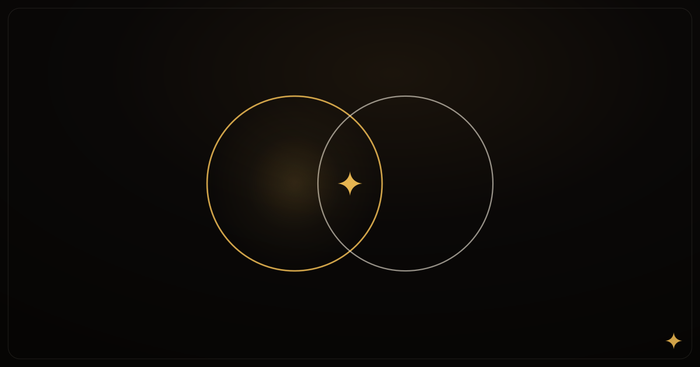

Best Disposable Camera Apps for Weddings in 2026
An honest comparison for couples who want every guest's angle.

Wedding guest photos used to mean a disposable on every table — or a hashtag that half the room forgot. In 2026 the category is crowded with apps promising the same idea: one shared roll, every Guest’s angle, one place to open it later. The differences that matter are narrower than the marketing. This is an honest pass for couples comparing Filmsera, Once, POV, Scene, and solo cameras like Dazz.
We’ll use Filmsera’s glossary on purpose: you Host a Film, Guests shoot Shots through a Look, nobody peeks until Reveal, then you relive the best Frames as a Recap. Those words map cleanly onto what you’re actually buying.
What actually matters on a wedding day
Before you compare brands, decide which problems you’re solving. Most couples care about four things:
- Guest join friction. Will Aunt Carol install an app at cocktail hour — or do you need a no-download / App Clip path?
- Look / camera shelf. Do you want every Shot to feel like the same night, with a real film grade in the viewfinder?
- Reveal ritual. Instant album dump, or a timed wait so the couple stays present?
- Aftercare. A Recap you can rewatch, or a folder you never open again?
No app wins all four. Pick the trade-off you’ll live with.
Filmsera — Looks, Reveal, Recap (app install required)
Filmsera is a group film camera for iPhone. The Host creates a Film, locks one Look for the whole roll, shares a QR or join code, and Guests shoot Shots into the same Film. Frames stay sealed until Reveal. Afterward, a Recap turns the roll into something people actually rewatch.
Where it shines: 24 live Looks (you see the grade before you shoot), a shared Host/Guest Film, timed Reveal, Live Activity, and Recap. Browse the shelf in Look Lab. For day-of ops, pair this with our wedding guest photo plan.
Where it doesn’t: Filmsera does not offer no-download guests. Scanning the QR still means installing Filmsera on iPhone. Android Guests can’t join. If zero-friction guest join is your #1 constraint, read the fair comparison on Filmsera vs Once and pick accordingly.
Plan for it. Put “download Filmsera” on the welcome sign or a table card, assign a memory captain to help, and seed a few Guests early. Don’t market or expect a browser camera that isn’t there yet.
Once — no-download / App Clip guest join
Once is built for events where guest friction is the whole game. App Clip and no-download join patterns mean more of the room can shoot without hunting the App Store mid-toast. That’s a real advantage for large, mixed-tech weddings.
Trade-offs tend to land on camera depth and ritual: fewer film Looks than a dedicated shelf like Filmsera’s, and a different reveal / album model than timed Reveal + Recap. Choose Once when “everyone can join without installing” beats “everyone shoots through the same 8mm Look.”
POV & Scene — event apps in the same lane
POV and Scene sit in the same wedding / event guest-capture lane as Once: shared capture for parties and celebrations, with marketing that leans hard on easy guest join (often App Clip or lightweight paths). They’re worth a shortlist if your planner already recommends them or your guest list is phone-heterogeneous.
Evaluate them the same way: How fast can a Guest add a Shot? What does the Host see before Reveal? Is there a cohesive Look, or is it a dump of ungraded phone photos? Does anything like a Recap exist after the weekend?
Dazz — solo vintage camera, not a shared Film
Dazz (and similar solo vintage apps) compete on texture — disposable flash, grain, VHS haze — for one person shooting alone. They’re lovely for personal rolls and TikTok aesthetics. They are not a Host/Guest Film: you don’t get one QR, one shared Reveal, or a wedding-wide Recap.
Some couples use Dazz for getting-ready portraits and a multiplayer app for the reception. That’s fine. Just don’t expect a solo camera to collect every Guest’s angle into one roll.
Quick comparison (2026)
- Need Guests with zero App Store friction? Once, POV, or Scene — not Filmsera today.
- Need a deep Look shelf + timed Reveal + Recap on iPhone? Filmsera.
- Need solo film vibes only? Dazz / similar — then collect guest shots another way.
- Mixed Android + iPhone room? Filmsera alone won’t cover Android; plan a backup (physical disposables, a second app, or a cloud album for those tables).
The best wedding app is the one your Guests will actually open before the first dance — and the one whose finished roll you’ll still open a year later.
How we’d shortlist as a couple
- Count phones. If half the room is Android or “won’t install anything,” prioritize no-download guests.
- Decide if one Look matters. If yes, try Filmsera’s shelf in Look Lab and shoot a test Film with your wedding party.
- Set Reveal expectations early — morning-after is the sweet spot for most receptions.
- Print the join path (QR + one sentence). Apps fail when the Host assumes “people will just know.”
- Soft-launch at the rehearsal dinner. Fix join friction before the day that matters.
If Filmsera fits — iPhone Guests, one Look, a Reveal you can look forward to — download it on the App Store, Host a Film this week, and run the full checklist in How to plan guest photos. For a blunt feature table against the friction leader, see Filmsera vs Once.
Written by the Filmsera team
Filmsera is a group film camera — Host a Film, shoot Shots through 24 Looks, and open every Frame together at Reveal. Download on the App Store →